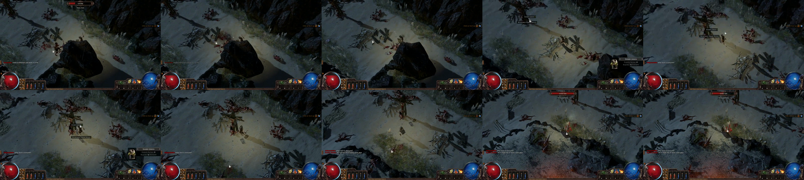
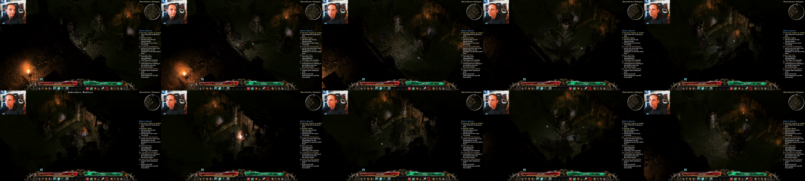
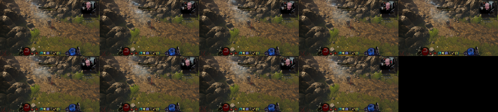
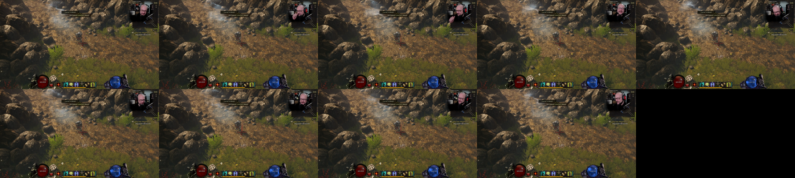

Actual source-game captures. G1 remains incomplete. Provenance, limits and remaining gaps.
Early-game traversal/combat; no PoE2. Nominal source30–40s.

Dungeon traversal/combat; webcam retained. Zoom/angle not assumed default. Nominal source20000–20010s.

Not a traversal/combat pass. Decoder warnings and shortened output preserved.

The character still waits at zone entry; no motion category qualified.
